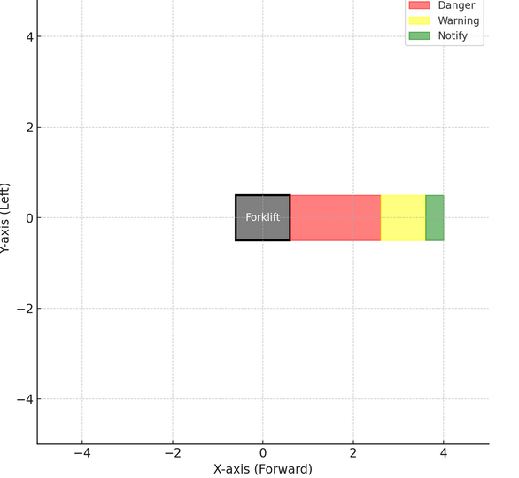
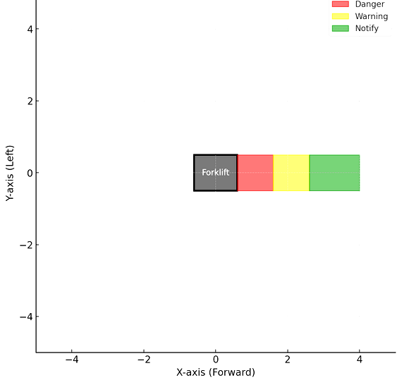
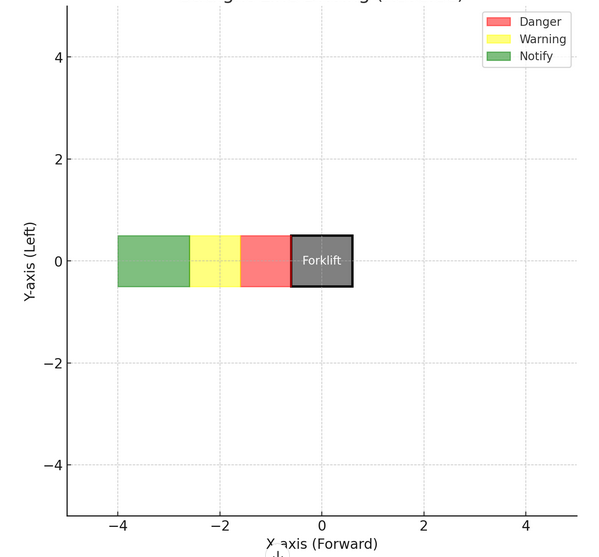

Presets configuration based on driving scenarios
Forktrucks
Automated forktrucks/forklifts require different zone configurations to operate safely in the various environments. These zone configurations depend on factors like min/max speed, load and driving scenarios. The following presets configuration serves as an example for a forktruck using two camera facing forward/main driving direcion [PORT0, PORT1] and another camera[PORT2] mounted rear end of vehicle.
Assuming the length of forktruck as 1.2m and 1m width.
Preset 0: When the forktruck is driving at highspeeds 
Preset 1: When the forktruck is driving at low speeds 
Preset 2: When forktruck is driving in reverse direction 
{
"applications": {
"instances": {
"app0": {
"class": "ods",
"presets": {
"definitions":{
"0": {
"description": "Driving Forward - High speeds",
"preset": {
"activePorts": ["port0", "port1"],
"zones": {
"zoneConfigID": 0,
"zoneCoordinates": [
[[0.6, 0.5], [0.6, -0.5], [2.6, -0.5], [2.6, 0.5]],
[[2.6, 0.5], [2.6, -0.5], [3.6, -0.5], [3.6, 0.5]],
[[3.6, 0.5], [3.6, -0.5], [4, -0.5], [4, 0.5]]
]
}
}
},
"1": {
"description": "Driving Forward - Slow speeds",
"preset": {
"activePorts": ["port0","port1"],
"zones": {
"zoneConfigID": 1,
"zoneCoordinates": [
[[0.6, 0.5], [0.6, -0.5], [1.6, 0.5], [1.6, -0.5]], // Danger/Emergency Stop Zone
[[1.6, 0.5], [1.6, -0.5], [2.6, 0.5], [2.6, -0.5]], // Warning Zone
[[2.6, 0.5], [2.6, -0.5], [4, 0.5], [4, -0.5]] // Notify Zone (Slow Down)
]
}
}
},
"2": {
"description": "Driving Backward",
"preset": {
"activePorts": [
"port2"
],
"zones": {
"zoneConfigID": 2,
"zoneCoordinates": [
[[-0.6, 0.5], [-0.6, -0.5], [-1.6, 0.5], [-1.6, -0.5]], // Danger/Emergency Stop Zone
[[-1.6, 0.5], [-1.6, -0.5], [-2.6, 0.5], [-2.6, -0.5]], // Warning Zone
[[-2.6, 0.5], [-2.6, -0.5], [-4, 0.5], [-4, -0.5]] // Notify Zone (Slow Down)
]
}
}
},
"3": {
"description": "Power saving / charging mode",
"preset": {
"activePorts": [],
"zones": {
"zoneConfigID": 3
}
}
}}}}}}}